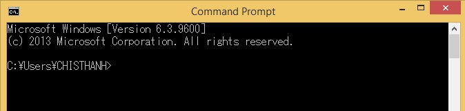
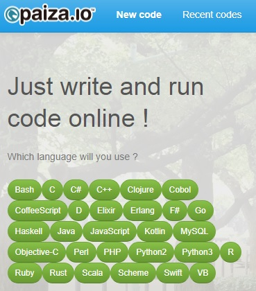
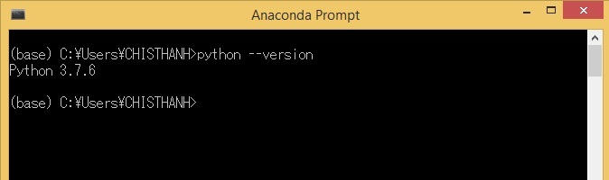
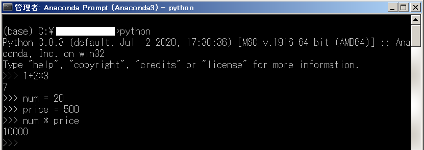

Trong bài này, chúng ta sẽ cùng tìm hiểu bốn cách chạy file python trực tiếp trên bốn chương trình tạo môi trường lập trình python phổ biến hiện nay.
Lựa chọn chương trình tạo môi trường lập trình python
Để chạy được python, bạn cần một phần mềm tạo môi trường lập trình python để chúng ta có thể nhập code python và chạy nó. Có rất nhiều chương trình tạo môi trường lập trình python, bạn có thể lựa chọn một trong số chúng dưới đây.
Command Prompt
Command Prompt là chương trình sẵn có của windows giúp bạn chạy code python trực tiếp trên nền tảng DOS. Bạn có thể tham khảo cách khởi động Command Prompt tại Cách khởi động Command Prompt trên máy tính
Ngoài cách dùng Command Prompt để chạy code python, bạn cũng có thể sử dụng chương trình này để chạy một chương trình đã được lưu vào file python. Bạn có thể tham khảo thêm tại bài Cách viết chương trình python, lưu giữ và chạy chương trình python
Tuy nhiên để có thể chạy python được trên Command Prompt thì có một yêu cầu là bạn đã cài python vào máy, và cài đặt môi trường python vào hệ điều hành windows.

Ngoài ra bạn cũng có thể thay thế Command Prompt bằng Windows PowerShell. Cả hai phần mềm này đều cung cấp nên tảng DOS giúp chạy code python trực tiếp.

Anaconda Prompt
Anaconda Prompt là chương trình giúp nhập lệnh và chạy code python trực tiếp. Đây là phần mềm được tích hợp khi bạn cài python bằng Anaconda. Nếu bạn đã cài python bằng Anaconda, bạn có thể khởi động chương trình này bằng cách tìm đến icon của Anaconda Prompt trong thẻ Programs trên Start Menu, hoặc bạn có thể nhấn phím Windows sau đó nhập vào dòng Anaconda Prompt để tìm têm chương trình. Sau đó hãy click vào icon và khởi động nó.

Giống như Command Prompt, chương trình Anaconda Prompt cũng có thể sử dụng để một chương trình đã được lưu vào file python. Bạn có thể tham khảo thêm tại bài Cách viết chương trình python, lưu giữ và chạy chương trình python
Jupyter-NoteBook
Nếu bạn quen thao tác trực tiếp trên các browwer như Google Chrome hay Coccoc, Firefox, bạn có thể dùng Jupyter NoteBook - phần mềm giúp chạy code python trực tiếp trên browser được tích hợp khi cài Anaconda.
Jupyter với khả năng lưu lại được cả câu lệnh cùng các kết quả thực hiện như log hoặc biểu đồ, sẽ giúp bạn có thể tiết kiệm thời gian khi mở lại chương trình mình đang viết.

Bạn có thể khởi động Jupyter tương tự như Anaconda Prompt bằng cách tìm icon của chương trình này trong thẻ Programs trên Start Menu.
Chạy code python online với paiza.io
paiza.io là một trang web cung cấp nền tảng online chạy chương trình được viết bởi nhiều loại ngôn ngữ, trong đó có cả python. Nếu bạn chưa cài python lên máy tính của mình, thì việc chạy online trên website này cũng là một sự lựa chọn không hề tồi chút nào.
Trong các bài hướng dẫn trong website Lập trình căn bản.com này, Kiyoshi cũng mạn phép dùng paiza.io như là một cửa sổ luyện tập online nhằm giúp các bạn ôn tập các kiến thức trong mỗi bài viết.
Cửa sổ Chạy Code Online hiện cũng đã được Kiyoshi tích hợp vào biểu tượng dấu code </> ở bên tay trái trong mỗi bài viết rồi, bạn hãy click vào để mở nó mỗi khi cần luyện tập code nhé.
Chạy code python
Chạy code python trực tiếp
Sau khi khởi động một trong các phần mềm ở trên xong, chúng ta đã có môi trường lập trình python. Lúc này bạn đã có thể chạy code python trực tiếp bằng cách nhập các dòng code của python lên màn hình của các phần mềm ở trên, nhấn Enter và thực thi chúng. Ví dụ bạn có thể sử dụng dòng lệnh dưới đây để kiểm tra phiên bản của python:
python --version |
Hãy cùng xem màn hình nhập lệnh python và kết quả trả về với phần mềm Anaconda Prompt như hình dưới đây:

Chạy code python thông qua chế độ tương tác
Trong python có sẵn một mode gọi là chế độ tương tác giúp chúng ta thực thi nhanh chóng một dòng lệnh nhập trực tiếp vào và đưa ngay kết quả ra màn hình mà không cần phải lưu tệp chương trình. Sau khi khởi động Command Prompt hoặc Anaconda Prompt, chúng ta khởi động chế độ tương tác bằng dòng lệnh sau đây:
python |
Một màn hình nhập dữ liệu của chế độ tương tác sẽ hiện ra. Tiếp theo chúng ta hãy thử chạy vài dòng code python đơn giản như gán một giá trị vào biến số và tính toán với nó và in kết quả ra màn hình như sau.
num = 20 |
Kết quả phép tính với biến số sẽ được hiển thị ngay:

- Xem thêm: Sử dụng chế độ tương tác trong python
Chạy code python được viết trong file python.
Bạn có các dòng code python đã được viết và lưu giữ trong file sample.py. Bạn muốn chạy chương trình python trong file này mà vẫn chưa biết cách làm sao?
Giả sử file sample.py có đường dẫn D:¥user¥sample.py với cấu trúc như sau:
D:¥ ├---user ├ ├--- sample.py
Để chạy được chương trình python được viết trong file này, sau khi khởi động Command Prompt hoặc Anaconda Prompt, chúng ta cần di chuyển thư mục hiện tại về thư mục chứa file python cần chạy bằng lệnh cd/d <folder_path> như sau:
cd/d D:¥user |
Sau đó, chúng ta chỉ cần chạy file python đó bằng lệnh python <filename.py> là xong.
python sample.py |
Tổng kết
Trên đây Kiyoshi đã hướng dẫn bạn bốn cách chạy code python trực tiếp rồi. Để nắm rõ nội dung bài học hơn, bạn hãy thực hành viết lại các ví dụ của ngày hôm nay nhé.
Và hãy cùng tìm hiểu những kiến thức sâu hơn về python trong các bài học tiếp theo.
URL Link
HOME › python cơ bản - lập trình python cho người mới bắt đầu>>03. kiến thức căn bản về chuơng trình python